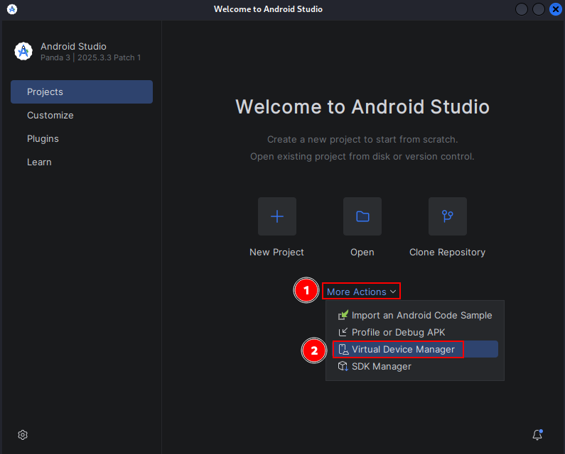

Android Forensics Analysis¶
Evidence Extraction¶
Smartphones have become an essential tool across all sectors of modern society: from regular consumers to high-ranking government officials and the business sector.
Smartphones are well known for their versatility. In a single day, a smartphone can function as:
A wallet
A barcode reader
A satellite navigation system
An email or social media client
A WiFi hotspot
A telephone
Recently, smartphones have also been increasingly used as smart health sensors, allowing cardiac patients to safely remain at home while medical staff remotely monitor and supervise their heart conditions.
Mobile forensics refers to digital forensic analysis related to the recovery of data or digital evidence from mobile devices such as smartphones, tablets, and GPS devices.
It is important that this recovery process is performed under forensic conditions.
Several aspects must be considered during mobile forensic investigations:
Data acquisition often requires collecting evidence from a powered-on device because hardware or software interfaces to access internal memory may intentionally be unavailable.
External storage such as SD cards may contain valuable evidence and must also be acquired.
Maintaining the Chain of Custody (CoC) and preserving integrity is difficult because many forensic tools require installing applications on the analyzed device.
Mobile file systems usually cannot be mounted as read-only.
Malware may detect analysis environments and destroy evidence.
The acquisition process itself may alter evidence integrity, potentially affecting admissibility in court.
Objectives¶
Become aware of the difficulties involved in obtaining forensic evidence from Android devices.
Learn how to extract forensic evidence from Android devices.
Materials¶
Android Studio
VirtualBox
SDK Platform Tools
Andriller
AFLogical OSE
1) Familiarization with Android¶
a) Install Android Studio¶
Android Studio can be downloaded from the official website:
https://developer.android.com/studio
Installation on Debian/Ubuntu:
sudo apt update
sudo apt install openjdk-17-jdk -y
Download Android Studio:
wget https://redirector.gvt1.com/edgedl/android/studio/ide-zips/latest/android-studio-linux.tar.gz
Extract the package:
tar -xvf android-studio-linux.tar.gz




b) Run an Android Virtual Device (AVD)¶
Once Android Studio is installed:
Create any project.
Open
Device Manager.Create a virtual device.
Select a Google Pixel image.
Download the Android system image.
Start the emulator using the Play button.
Alternative command-line execution:
To install the .apk, an emulator is required. Create an emulator using the following command:
avdmanager create avd -n Android26 -k "system-images;android-26;default;x86_64" -c 10M
Verify that the device has been installed correctly:
avdmanager list avd

Start the emulator as follows:
emulator -avd Android26

c) Install Android Debug Bridge (ADB Platform Tools)¶
Installation on Debian/Ubuntu:
sudo apt update
sudo apt install adb fastboot -y
Verify installation:
adb version

Start ADB server:
adb start-server
Stop ADB server:
adb kill-server
d) Enable debugging and practice ADB commands¶
Inside the emulator:
Open
Settings.Go to
About phone.Tap
Build number7 times.Developer options will be enabled.
Go to
Developer Options.Enable
USB debugging.
ADB Commands¶
List devices:
adb devices

Open shell:
adb shell

Restart ADB as root:
adb root

Pull files from device:
adb pull /sdcard/Download/

Push files to device:
echo hello > hello.txt
adb push hello.txt /sdcard/Download

Reboot device:
adb reboot
Install APK:
adb install app.apk

Uninstall application:
adb uninstall owasp.mstg.uncrackable2

List installed packages:
adb shell pm list packages

Capture screenshots:
adb exec-out screencap -p > screenshot.png

Record screen:
adb shell screenrecord /sdcard/demo.mp4

Pull recorded video:
adb pull /sdcard/demo.mp4

2) Android Virtualization Close to Real Conditions¶
a) Download Android x86¶
Official website:
https://www.android-x86.org/
Download ISO using wget:
wget https://sourceforge.net/projects/android-x86/files/latest/download -O android-x86.iso
Verify ISO:
sha256sum android-x86.iso
b) Create a 32-bit Linux VM¶
Recommended VirtualBox configuration:
2GB RAM
8GB Hard Disk
256MB Video Memory
Create VM using VBoxManage:
VBoxManage createvm --name AndroidVM --ostype Linux_64 --register
Create disk:
VBoxManage createmedium disk --filename AndroidVM.vdi --size 8192
Set RAM:
VBoxManage modifyvm AndroidVM --memory 2048 --vram 256
Attach disk:
VBoxManage storagectl AndroidVM --name "SATA Controller" --add sata
Attach ISO:
VBoxManage storageattach AndroidVM --storagectl "SATA Controller" --port 0 --device 0 --type dvddrive --medium android-x86.iso
c) Install Android in the VM¶
Boot the VM and select:
Installation - Install Android-x86 to harddisk
Create partitions.
Select filesystem:
ext4
After installation:
Remove ISO from the VM.
Edit GRUB boot parameters:
Replace:
quiet
With:
nomodeset xforcevesa
Boot the system.
Configure Android normally.
Add Google account:
Settings -> Accounts -> Add account
Enable synchronization:
Automatically sync data
d) Install AFLogical OSE and perform forensic extraction¶
Connect to the Android VM:
adb connect 10.206.8.1
Verify connection:
adb devices
Install AFLogical OSE:
adb install AFLogical-OSE_1.5.2.apk
Launch the application.
Select:
Select All -> Capture
Evidence will be stored inside:
/sdcard/forensics/
Extract evidence:
adb pull /sdcard/forensics/ .
List extracted files:
ls forensics/
Generate hashes:
sha256sum forensics/*
e) Install Andriller and perform evidence extraction¶
Create virtual environment:
python3 -m venv env
Activate environment:
source env/bin/activate
Install Andriller:
pip install andriller -U
Launch Andriller:
python -m andriller
Select:
Output directory
ADB-connected device
Start extraction.
The final report will be generated as HTML.
Useful commands:
Verify ADB connection:
adb devices
Generate Android backup:
adb backup -all
3) WhatsApp Forensic Analysis¶
a) What are consensual and non-consensual forensic analyses?¶
Consensual Analysis¶
A forensic analyst has authorization from the device owner to perform the analysis.
This means:
The owner provides passwords and credentials.
The investigator can access the device legally and directly.
Non-Consensual Analysis¶
The analysis is performed under judicial authorization.
In these situations:
Credentials are usually unavailable.
Advanced forensic methods may be required.
Physical acquisition may become necessary.
b) What techniques can be used to analyze WhatsApp conversations?¶
Screenshot Analysis¶
Conversations can be analyzed using screenshots.
However:
Screenshots are easy to manipulate.
Device integrity must be verified.
Token-Based Database Extraction¶
WhatsApp Web sessions may expose authentication tokens.
This can allow forensic extraction of synchronized conversations.
Database Extraction from the Device¶
This is the most reliable method.
Requirements:
Root access
Physical or logical acquisition
Useful commands:
Locate databases:
adb shell
find /data/data/com.whatsapp -name "*.db"
c) Where does WhatsApp store encryption keys and databases?¶
Encryption Key¶
/data/data/com.whatsapp/files/key
Databases¶
/data/data/com.whatsapp/databases/
Important database files:
msgstore.db
wa.db
Extract directories:
adb pull /data/data/com.whatsapp/files/key
adb pull /data/data/com.whatsapp/databases/
Root shell may be required:
adb root
adb shell
4) Install WhatsApp and Extract Databases¶
Install WhatsApp from Google Play.
Alternatively:
adb install WhatsApp.apk
Verify installation:
adb shell pm list packages | grep whatsapp
After receiving messages:
Open root shell:
adb root
adb shell
Navigate to databases:
cd /data/data/com.whatsapp/databases
List files:
ls
Extract databases:
adb pull /data/data/com.whatsapp/databases
Extract encryption key:
adb pull /data/data/com.whatsapp/files/key
Analyze SQLite database:
sqlite3 msgstore.db
View messages:
select * from message ORDER BY timestamp;
List tables:
.tables
Exit SQLite:
.exit
Decrypt crypt databases using Andriller.
Useful forensic commands:
Generate hashes:
sha256sum msgstore.db
Check file metadata:
stat msgstore.db
Analyze APK information:
aapt dump badging WhatsApp.apk
Extract APK from device:
adb shell pm path com.whatsapp
adb pull /data/app/com.whatsapp/base.apk
Generate complete Android backup:
adb backup -apk -shared -all
Inspect logs:
adb logcat
Capture device filesystem:
adb shell ls -R /sdcard/